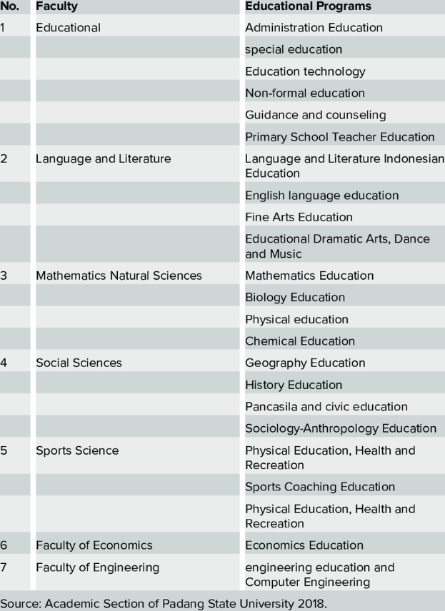

| Number of Study Program Related to Sustainability Offered |
|---|
|
 Number of study program related to sustainability offered
|
Above is a list of the study program that have had changes approved through Curriculum Refresh programme which aims to embed sustainability into all course and module content offered by the University.